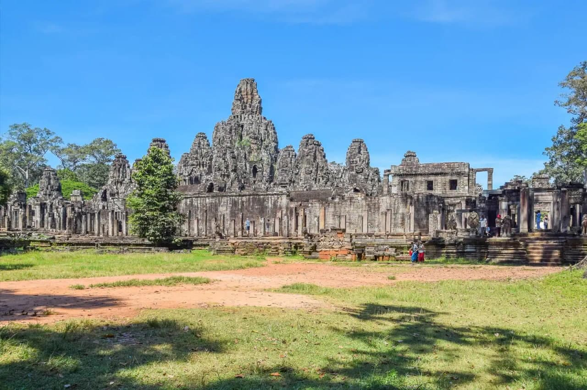
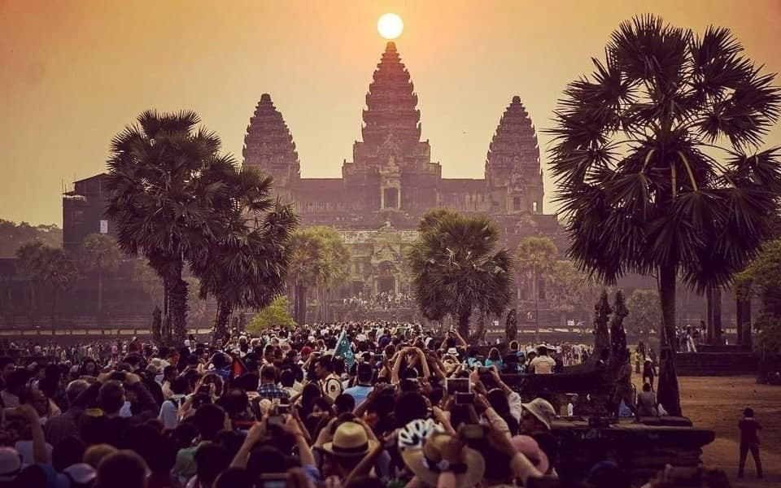

HISTORY OF ANGKOR WAT
located in siemreap province
Angkor Wat is an architectural masterpiece and the largest religious monument in the world – covering an area four times the size of Vatican City. It was built by the Khmer King Suryavarman II in the first half of the 12th century, around the year 1110-1150, making Angkor Wat almost 900 years old. The temple complex, built in the capital of the Khmer Empire, took approximately 30 years to build. It was originally dedicated to the Hindu god Vishnu before becoming a Buddhist temple by the end of the 12th century.
Go to Read Full ArticleLearn More About Temples

Ba Yon Temple
Ba Yon Temple features approximately 50 stone towers with intricately carved with the 4 faces of Bodhisattva Avalokiteshvara on most of them. Set in the middle of Angkor Thom, it was built in the late 12th century to serve as the official state temple of Mahayana Buddhist King Jayavarman VII.

Angkor Thom or Big Angkor
Angkor Thom or Big Angkor was constructed by King Jayavarman VII (1181-1219) as the last capital city of the Angkorian era. The largest site in the Angkor Archaeological Park, 5 20-metre-tall gates surround Angkor Thom, with intricate stone carvings of elephants and the 4-faced Bodhisattva Avalokiteshvara, while causeways leading to the gates are flanked with 108 statues of gods and demons.

Preah Khan (Sacred Sword) Temple
The Preah Khan (Sacred Sword) temple complex is surrounded by a wide moat and features walls decorated with carvings of garudas, a bird-like mythical being in Hindu mythology. Dedicated by the King Jayavarman VII to his father in 1191, it houses maze-like entryways, towers, ceremonial spaces, courtyards, and shrines.

Ta Prohm Temple
Ta Prohm Temple gained international recognition after it was featured in the video game-inspired movie Tomb Raider. This tranquil monastery was built during the mid-12th century by King Jayavarman VII in commemoration of his mother.

Angkor Wat Temple
Angkor Wat, located in northwest Cambodia, is the largest religious structure in the form of a temple complex in the world by land area, measuring 162.6 hectares. At the centre of the temple stands a quincunx of four towers surrounding a central spire that rises to a height of 65 m above the ground.
- Address: Krong Siem Reap
- Builder: Started by Suryavarman II
- Architectural styles: Khmer (Angkor Wat style)
- Land area: 163 ha
- Age: 900 years old